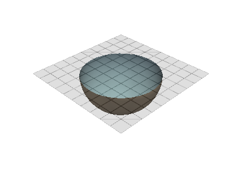
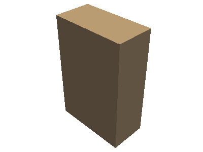
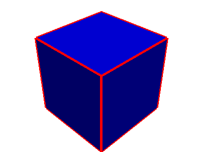
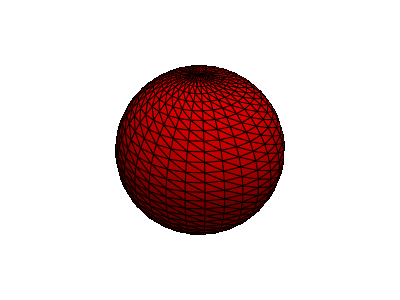
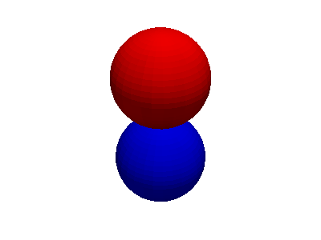
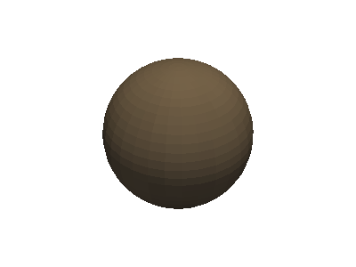
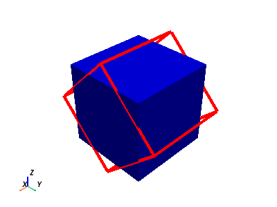
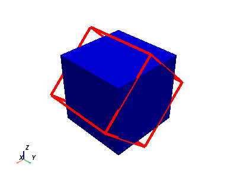
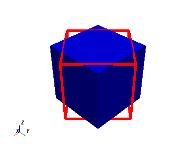
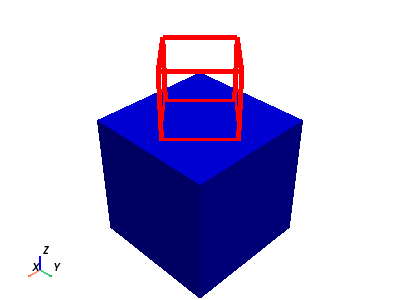

pyvista.Actor#
- class Actor(mapper=None, prop=None)[source]#
Wrap vtkActor.
This class represents the geometry & properties in a rendered scene. Normally, a
pyvista.Actoris constructed frompyvista.Plotter.add_mesh(), but there may be times when it is more convenient to construct an actor directly from apyvista.DataSetMapper.- Parameters:
- mapper
pyvista.DataSetMapper,optional DataSetMapper.
- prop
pyvista.Property,optional Property of the actor.
- mapper
Examples
Create an actor without using
pyvista.Plotter.>>> import pyvista as pv >>> mesh = pv.Sphere() >>> mapper = pv.DataSetMapper(mesh) >>> actor = pv.Actor(mapper=mapper) >>> actor Actor (0x7f54c4d65ee0) Center: (0.0, 0.0, 0.0) Pickable: True Position: (0.0, 0.0, 0.0) Scale: (1.0, 1.0, 1.0) Visible: True X Bounds -4.993E-01, 4.993E-01 Y Bounds -4.965E-01, 4.965E-01 Z Bounds -5.000E-01, 5.000E-01 User matrix: Unset Has mapper: True ...
Change the actor properties and plot the actor.
>>> import pyvista as pv >>> mesh = pv.Sphere() >>> mapper = pv.DataSetMapper(mesh) >>> actor = pv.Actor(mapper=mapper) >>> actor.prop.color = 'blue' >>> actor.plot()
Create an actor using the
pyvista.Plotterand then change the visibility of the actor.>>> import pyvista as pv >>> pl = pv.Plotter() >>> mesh = pv.Sphere() >>> actor = pl.add_mesh(mesh) >>> actor.visibility = False >>> actor.visibility False

- property backface_prop: Optional[Property]#
Return or set the backface property.
By default this property matches the frontface property
Actor.prop. Once accessed or modified, this backface property becomes independent of the frontface property. In order to restore the fallback to frontface property, assignNoneto the property.- Returns:
pyvista.PropertyThe object describing backfaces.
Examples
Clip a sphere by a plane and color the inside of the clipped sphere light blue using the
backface_prop.>>> import numpy as np >>> import pyvista as pv >>> plane = pv.Plane(i_size=1.5, j_size=1.5) >>> mesh = pv.Sphere().clip_surface(plane, invert=False) >>> pl = pv.Plotter() >>> actor = pl.add_mesh(mesh, smooth_shading=True) >>> actor.backface_prop.color = 'lightblue' >>> _ = pl.add_mesh( ... plane, opacity=0.25, show_edges=True, color='grey', lighting=False, ... ) >>> pl.show()

- property bounds: tuple#
Return the bounds of the actor.
Bounds are
(-X, +X, -Y, +Y, -Z, +Z)Examples
>>> import pyvista as pv >>> pl = pv.Plotter() >>> mesh = pv.Cube(x_length=0.1, y_length=0.2, z_length=0.3) >>> actor = pl.add_mesh(mesh) >>> actor.bounds (-0.05, 0.05, -0.1, 0.1, -0.15, 0.15)

- property center: tuple#
Return the center of the actor.
Examples
>>> import pyvista as pv >>> pl = pv.Plotter() >>> actor = pl.add_mesh(pv.Sphere(center=(0.5, 0.5, 1))) >>> actor.center (0.5, 0.5, 1)
- copy(deep=True) Actor[source]#
Create a copy of this actor.
- Parameters:
- Returns:
pyvista.ActorDeep or shallow copy of this actor.
Examples
Create an actor of a cube by adding it to a
pyvista.Plotterand then copy the actor, change the properties, and add it back to thepyvista.Plotter.>>> import pyvista as pv >>> mesh = pv.Cube() >>> pl = pv.Plotter() >>> actor = pl.add_mesh(mesh, color='b') >>> new_actor = actor.copy() >>> new_actor.prop.style = 'wireframe' >>> new_actor.prop.line_width = 5 >>> new_actor.prop.color = 'r' >>> new_actor.prop.lighting = False >>> _ = pl.add_actor(new_actor) >>> pl.show()

- property mapper: _BaseMapper#
Return or set the mapper of the actor.
Examples
Create an actor and assign a mapper to it.
>>> import pyvista as pv >>> dataset = pv.Sphere() >>> actor = pv.Actor() >>> actor.mapper = pv.DataSetMapper(dataset) >>> actor.mapper DataSetMapper (0x7f34dcec5040) Scalar visibility: True Scalar range: (0.0, 1.0) Interpolate before mapping: False Scalar map mode: default Color mode: direct Attached dataset: PolyData (0x7f34dcec5f40) N Cells: 1680 N Points: 842 N Strips: 0 X Bounds: -4.993e-01, 4.993e-01 Y Bounds: -4.965e-01, 4.965e-01 Z Bounds: -5.000e-01, 5.000e-01 N Arrays: 1
- property memory_address#
Return the memory address of this actor.
- property orientation: tuple#
Return or set the actor orientation.
Orientation is defined as the rotation from the global axes in degrees about the actor’s x, y, and z axes.
Examples
Show that the orientation changes with rotation.
>>> import pyvista as pv >>> mesh = pv.Cube() >>> pl = pv.Plotter() >>> actor = pl.add_mesh(mesh) >>> actor.rotate_x(90) >>> actor.orientation (90, 0, 0)
Set the orientation directly.
>>> actor.orientation = (0, 45, 45) >>> actor.orientation (0, 45, 45)
Reorient just the actor and plot it. Note how the actor is rotated about its own axes as defined by its position.
>>> import pyvista as pv >>> mesh = pv.Cube() >>> pl = pv.Plotter() >>> _ = pl.add_mesh(mesh, color='b') >>> actor = pl.add_mesh( ... mesh, color='r', style='wireframe', line_width=5, lighting=False, ... ) >>> actor.position = (0, 0, 1) >>> actor.orientation = (45, 0, 0) >>> pl.show_axes() >>> pl.show()
- property pickable: bool#
Return or set actor pickability.
Examples
Create an actor using the
pyvista.Plotterand then make the actor unpickable.>>> import pyvista as pv >>> pl = pv.Plotter() >>> actor = pl.add_mesh(pv.Sphere()) >>> actor.pickable = False >>> actor.pickable False

- plot(**kwargs)[source]#
Plot just the actor.
This may be useful when interrogating or debugging individual actors.
- Parameters:
- **kwargs
dict,optional Optional keyword arguments passed to
pyvista.Plotter.show().
- **kwargs
Examples
Create an actor without the
pyvista.Plotter, change its properties, and plot it.>>> import pyvista as pv >>> mesh = pv.Sphere() >>> mapper = pv.DataSetMapper(mesh) >>> actor = pv.Actor(mapper=mapper) >>> actor.prop.color = 'red' >>> actor.prop.show_edges = True >>> actor.plot()

- property position#
Return or set the actor position.
Examples
Change the position of an actor. Note how this does not change the position of the underlying dataset, just the relative location of the actor in the
pyvista.Plotter.>>> import pyvista as pv >>> mesh = pv.Sphere() >>> pl = pv.Plotter() >>> _ = pl.add_mesh(mesh, color='b') >>> actor = pl.add_mesh(mesh, color='r') >>> actor.position = (0, 0, 1) # shifts the red sphere up >>> pl.show()

- property prop#
Return or set the property of this actor.
Examples
Modify the properties of an actor after adding a dataset to the plotter.
>>> import pyvista as pv >>> pl = pv.Plotter() >>> actor = pl.add_mesh(pv.Sphere()) >>> prop = actor.prop >>> prop.diffuse = 0.6 >>> pl.show()

- property renderer#
Return the renderer associated with this actor.
- rotate_x(angle: float)[source]#
Rotate the actor about the x axis.
- Parameters:
- angle
float Angle to rotate the actor about the x axis in degrees.
- angle
Examples
Rotate the actor about the x axis 45 degrees. Note how this does not change the location of the underlying dataset.
>>> import pyvista as pv >>> mesh = pv.Cube() >>> pl = pv.Plotter() >>> _ = pl.add_mesh(mesh, color='b') >>> actor = pl.add_mesh( ... mesh, color='r', style='wireframe', line_width=5, lighting=False, ... ) >>> actor.rotate_x(45) >>> pl.show_axes() >>> pl.show()

- rotate_y(angle: float)[source]#
Rotate the actor about the y axis.
- Parameters:
- angle
float Angle to rotate the actor about the y axis in degrees.
- angle
Examples
Rotate the actor about the y axis 45 degrees. Note how this does not change the location of the underlying dataset.
>>> import pyvista as pv >>> mesh = pv.Cube() >>> pl = pv.Plotter() >>> _ = pl.add_mesh(mesh, color='b') >>> actor = pl.add_mesh( ... mesh, color='r', style='wireframe', line_width=5, lighting=False, ... ) >>> actor.rotate_y(45) >>> pl.show_axes() >>> pl.show()

- rotate_z(angle: float)[source]#
Rotate the actor about the z axis.
- Parameters:
- angle
float Angle to rotate the actor about the z axis in degrees.
- angle
Examples
Rotate the actor about the Z axis 45 degrees. Note how this does not change the location of the underlying dataset.
>>> import pyvista as pv >>> mesh = pv.Cube() >>> pl = pv.Plotter() >>> _ = pl.add_mesh(mesh, color='b') >>> actor = pl.add_mesh( ... mesh, color='r', style='wireframe', line_width=5, lighting=False, ... ) >>> actor.rotate_z(45) >>> pl.show_axes() >>> pl.show()

- property scale: tuple#
Return or set actor scale.
Examples
Create an actor using the
pyvista.Plotterand then change the scale of the actor.>>> import pyvista as pv >>> pl = pv.Plotter() >>> actor = pl.add_mesh(pv.Sphere()) >>> actor.scale = (2.0, 2.0, 2.0) >>> actor.scale (2.0, 2.0, 2.0)

- property texture#
Return or set the actor texture.
Notes
The mapper dataset must have texture coordinates for the texture to be used.
Examples
Create an actor and add a texture to it. Note how the
pyvista.PolyDatahas texture coordinates by default.>>> import pyvista as pv >>> from pyvista import examples >>> plane = pv.Plane() >>> plane.active_t_coords is not None True >>> pl = pv.Plotter() >>> actor = pl.add_mesh(plane) >>> actor.texture = examples.download_masonry_texture() >>> actor.texture <Texture(0x378c920) at 0x7f7af577e700>
- property user_matrix: Optional[ndarray]#
Return or set the orientation matrix.
Examples
Apply a 4x4 translation to a wireframe actor. This 4x4 transformation is effectively translates the actor by one unit in the Z direction, rotates the actor about the Z axis by approximately 45 degrees, and shrinks the actor by a factor of 0.5.
>>> import numpy as np >>> import pyvista as pv >>> mesh = pv.Cube() >>> pl = pv.Plotter() >>> _ = pl.add_mesh(mesh, color="b") >>> actor = pl.add_mesh( ... mesh, ... color="r", ... style="wireframe", ... line_width=5, ... lighting=False, ... ) >>> arr = np.array( ... [ ... [0.707, -0.707, 0, 0], ... [0.707, 0.707, 0, 0], ... [0, 0, 1, 1.500001], ... [0, 0, 0, 2] ... ] ... ) >>> actor.user_matrix = arr >>> pl.show_axes() >>> pl.show()

- property visibility: bool#
Return or set actor visibility.
Examples
Create an actor using the
pyvista.Plotterand then change the visibility of the actor.>>> import pyvista as pv >>> pl = pv.Plotter() >>> actor = pl.add_mesh(pv.Sphere()) >>> actor.visibility = False >>> actor.visibility False